Frequenzbetrieb Plugin Organizer
All your plugins with a real picture – sorted, searchable and loaded straight into Ableton Live with one click or one key. Free and open source by Frequenzbetrieb n.e.V.
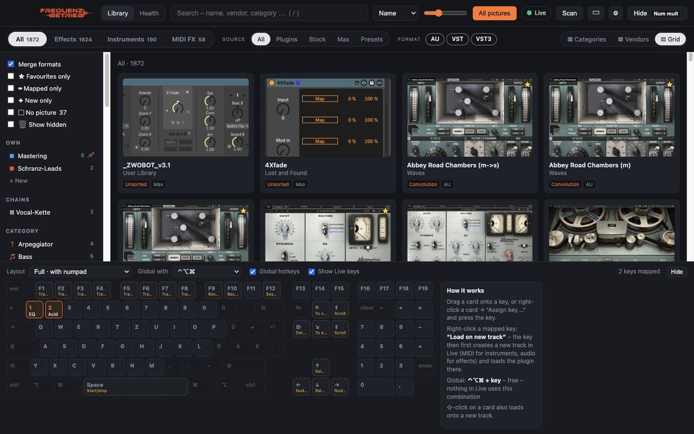
Getting started
- Launch the app. On first launch the Organizer gathers all plugins (AU, VST, VST3, AAX, CLAP), Live's stock devices, Max for Live devices, racks and presets.
- Allow permissions (Mac): Accessibility – so the Organizer may control Live – and Screen Recording – for snapshots taken inside Live. Both in System Settings → Privacy & Security.
- Activate the Live script (recommended) – see Setting up the Live script. Loading then takes a fraction of a second.
- Take pictures: open an empty set in Live and click All pictures at the top – see Pictures for all plugins.
The main window
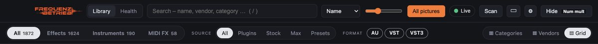
- Library / Health – switch between your plugins and the Health area.
- Search – by name, vendor or category. / jumps into the search field.
- Sort order – name, vendor, category or rating. The slider next to it changes the tile size.
- All pictures – takes pictures of everything that doesn't have one yet.
- Live – green while Ableton Live is running.
- Scan – rescan the plugin folders (also happens automatically when you install something).
- ▣ – view: full, sidecar or mini. ⚙ – settings. ? – this manual.
- Hide – hides the app; the same key (default Page Up) brings it back.
- Below: type (all, effects, instruments, MIDI FX), source (plugins, stock, Max, presets), format (AU, VST, VST3) and on the right the layout Categories / Vendors / Grid.
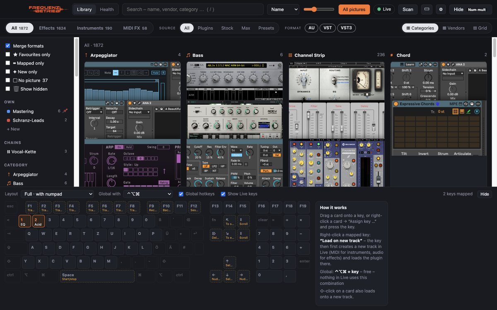
Pictures for all plugins
One click on All pictures does everything in two steps:
- In the background: AU and VST3 plugins are opened invisibly and photographed.
- In Live: everything else – VST2, stock and Max devices – is loaded into Live one by one, photographed and removed again.
While it runs, the button turns into Stop and shows the progress. Existing pictures are kept; only missing ones are taken.
Below the filters on the left, ▢ No picture shows how many pictures are still missing – tick it to see exactly those plugins. Photograph single plugins with right-click → Take picture, or pick any image with Choose own picture ….
Loading into Live
- Click a tile to load the plugin onto the selected track in Live.
- ⇧-click creates a new track first – MIDI for instruments, audio for effects.
- Or: right-click → Load in Live / Load on new track, a key, the Stream Deck or your phone.
Setting up the Live script
With the Live script the Organizer talks to Live's browser directly: loading takes a fraction of a second and always hits exactly the right device. The Organizer puts the script into your User Library itself – you only have to activate it in Live once:
- Save your set, restart Live.
- Open Live's settings (⌘ ,, Windows Ctrl ,) → tab “Link, Tempo & MIDI”.
- In a free row under Control Surface choose “Frequenzbetrieb”. Input and output stay at “None”.
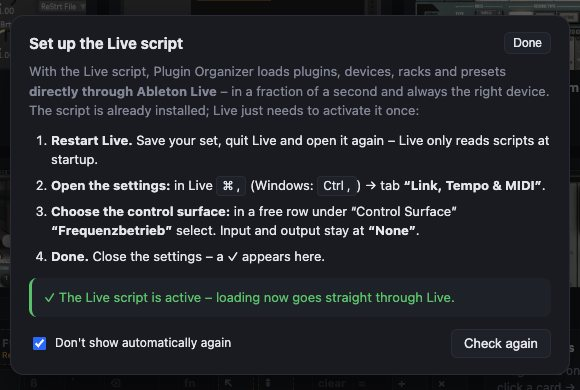
You can see the status any time under ⚙ Settings → Live script. Without the script the Organizer loads via Live's search – that works too, just slower.
Organising & finding
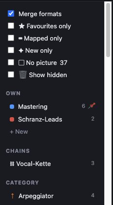
On the left you find:
- Filters: merge formats (AU/VST/VST3 of one plugin = one tile), favourites only, mapped only (with a key), new only, no picture, show hidden.
- Own: your collections.
- Chains: your chains.
- Category with subcategories (e.g. Dynamics › Compressor) and vendors.
Newly installed plugins are detected automatically and marked NEW for 14 days.
Right-click menu
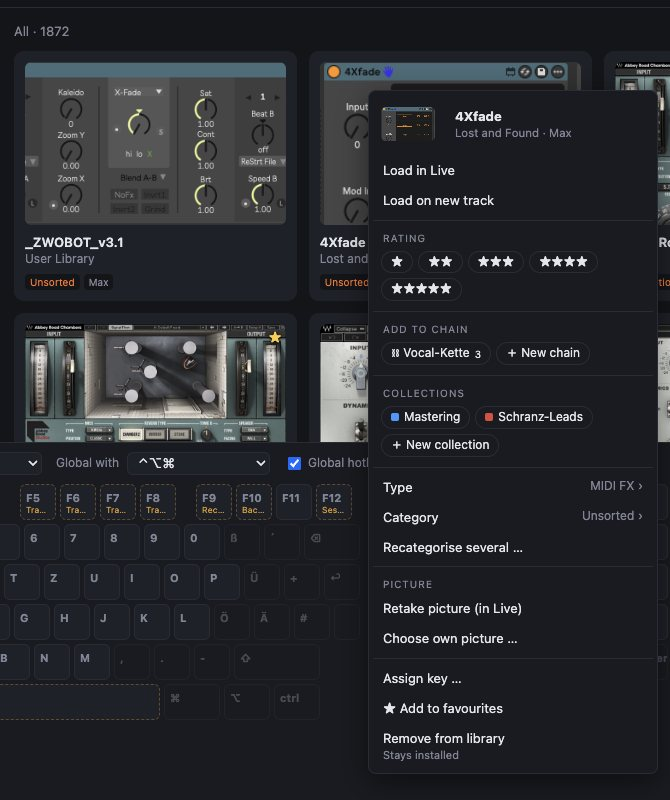
Right-clicking a tile offers everything you can do with a plugin:
- Load – onto the selected or a new track
- Rating (1–5 stars), Add to chain, Collections
- Change type and category when the automatic sorting is off
- Picture: retake or choose your own
- Assign key, favourite, Remove from library (stays installed, just hidden)
Several at once: select with ⌘-click (Windows Ctrl-click), then right-click.
Collections & favourites
Collections are your own folders, e.g. “Mastering” or “Techno leads”. Click + New under Own, then drag tiles onto the collection – or use right-click → Collections. A plugin can be in several collections. Right-click a collection to rename it, change its colour, pin or delete it. Mark favourites with right-click → ★ Add to favourites.
Rating
Right-click → Rating gives 1 to 5 stars; they appear on the tile next to the vendor. Rating in the sort menu at the top brings your favourites to the front.
Chains
A chain is several plugins loaded one after another onto one track – for example EQ → compressor → de-esser → reverb for vocals.
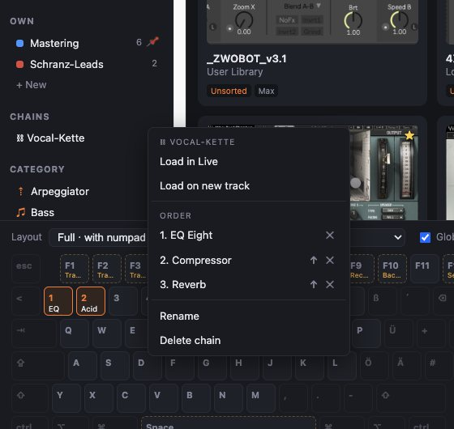
- Create: select plugins in the order you want with ⌘-click → right-click → Add to chain → ＋ New chain → enter a name.
- Extend: right-click a plugin → Add to chain → pick the chain, or drag the tile onto the chain.
- Load: click the chain on the left; ⇧-click loads it onto a new track.
- Edit: right-click the chain – ↑ moves up, ✕ removes.
Plugins on keys
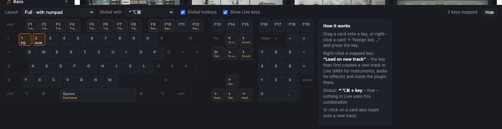
- Assign: drag a tile onto a key – or right-click → Assign key … and press the key.
- Use: in Live press modifier + key (default ⌃⌥⌘ – Live itself doesn't use it). Under “Global with” choose another combination or “none (only in Live)”: then the key alone works while Live is in front (Mac only).
- On a new track: right-click a mapped key → “Load on new track”.
- Keys Live uses itself are labelled (“Show Live keys”) so you don't overwrite anything important. Pick the layout (with/without numpad, MacBook, compact) at the top left.
Full, Sidecar, Mini
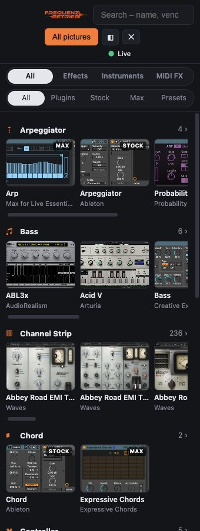
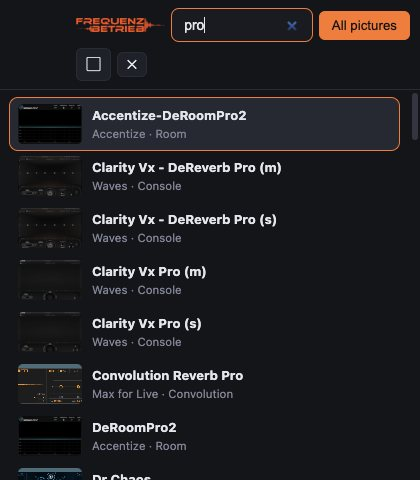
Via ▣ in the toolbar:
- Full – everything with filters and keyboard.
- Sidecar – a slim bar next to Live, categories as picture strips.
- Mini – a small search window: type, ↑/↓, Enter loads, ⇧Enter on a new track.
In the settings: Always on top and Hide after loading.
Racks & presets
Under Source → Presets you find instrument, drum, effect and MIDI racks (.adg) and device presets (.adv) from your User Library, all packs and Live's Core Library – sorted by rack type or device. So the many presets don't bury your plugins, they only appear on this tab. Presets show the picture of their device; they load just like plugins.
Stream Deck
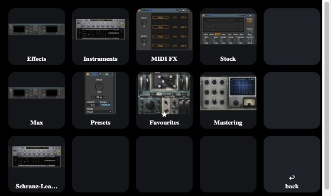
- Under ⚙ Settings → Stream Deck, download the plugin and double-click to install.
- In the Elgato software, drag the “Load plugin” action (category Frequenzbetrieb) onto a key and pick a plugin on the right – the key shows its picture.
- Or the “Open browser” action: one press opens a browser on the deck – 12 keys with pictures, ◀ ▶ on the right to page and ↩ to go back.
A short press loads onto the selected track, a long press (½ s) onto a new one. The Organizer needs to be running.
Phone & tablet
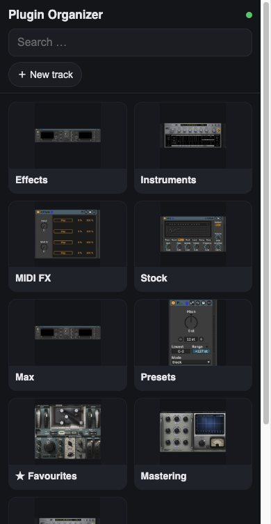
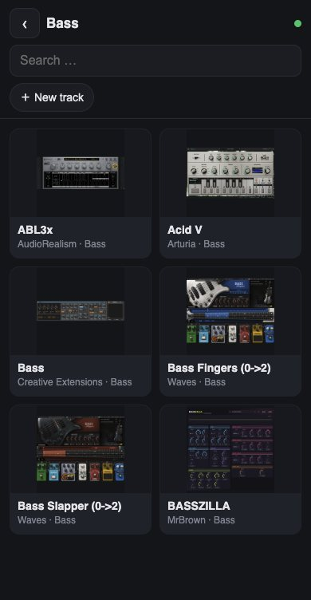
- ⚙ Settings → switch on Remote (phone & tablet).
- macOS asks once about incoming connections → Allow.
- Scan the QR code with your camera – the plugin browser opens in the web browser.
Tap to load into Live; the ＋ New track switch creates a new track first. No app needed, just the same Wi-Fi. Tip for iPhone/iPad: in Safari “Share → Add to Home Screen”.
Access only works with the secret key from the QR code. Create new code invalidates old links.
Library Health
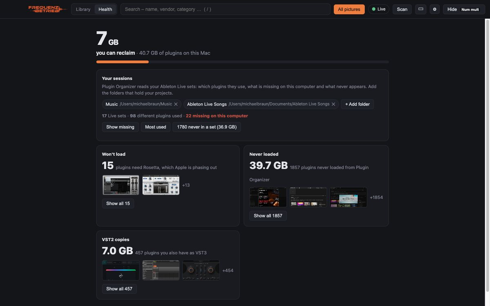
The Health area shows how much space your plugins take and what you could reclaim: plugins that only run under Rosetta, VST2 copies of plugins you also have as VST3, plugins you never load. Add the folders with your Live projects under Your sessions – then you see which plugins are missing from your sets, which you use most and which never appear in any set.
Settings
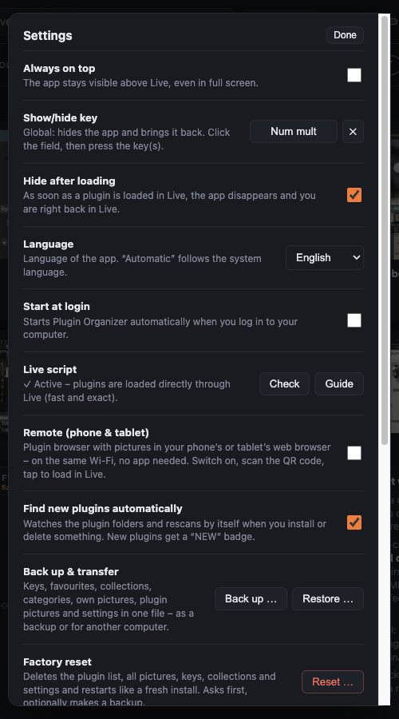
- Always on top, show/hide key, hide after loading
- Language: automatic, Deutsch or English
- Start at login
- Live script: status, guide, install
- Remote with QR code
- Find new plugins automatically
- Back up & transfer, factory reset
- Check for updates automatically, version, Stream Deck, links
Backup & reset
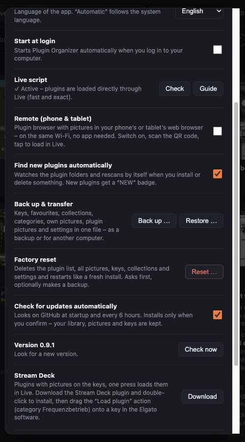
- Back up … writes keys, favourites, collections, chains, ratings, categories, own pictures, all plugin pictures and settings into one file (.pobackup).
- Restore … brings it back – on another computer, too.
- Reset … deletes the plugin list, pictures and settings and starts like a fresh install. The Organizer asks first and offers a backup. Your plugins and Live are not touched.
Windows
The Windows version is a beta. The installer triggers a SmartScreen warning: “More info” → “Run anyway”. Differences to the Mac:
| Feature | Windows |
|---|---|
| Pictures | VST3 automatically; VST2, stock and Max only with your own picture (no capture inside Live) |
| Loading | with the Live script as on the Mac; without it only the first search hit – so do activate the script |
| Keys only in Live | not available – use the global key combination |
| Health | without the Rosetta check |
| Everything else | as on the Mac |
Questions & problems
A plugin doesn't load, or the wrong one loads
Activate the Live script (see above). Check that the plugin shows up in Live's browser under “Plug-Ins” – the Organizer can't load disabled plugins.
A plugin gets no picture
Live doesn't open very old 32-bit or Intel-only plugins on Apple Silicon. Give them your own picture with a right-click or hide them. While pictures are taken in Live, Live must stay in front.
The Live script says “restart Live”
After an update the Organizer sometimes brings a new version of the script. Live only loads it after a restart.
The keys don't work
Plugin Organizer must be allowed under System Settings → Privacy & Security → Accessibility. Also check that “Global hotkeys” below the keyboard is on.
Where do I report bugs?
On GitHub or via ⚙ Settings → Report a bug. Thank you!
Frequenzbetrieb Plugin Organizer · free to use under the AGPL-3.0 · www.frequenzbetrieb.de · Donate
Ableton and Ableton Live are trademarks of Ableton AG; VST is a trademark of Steinberg Media Technologies GmbH.